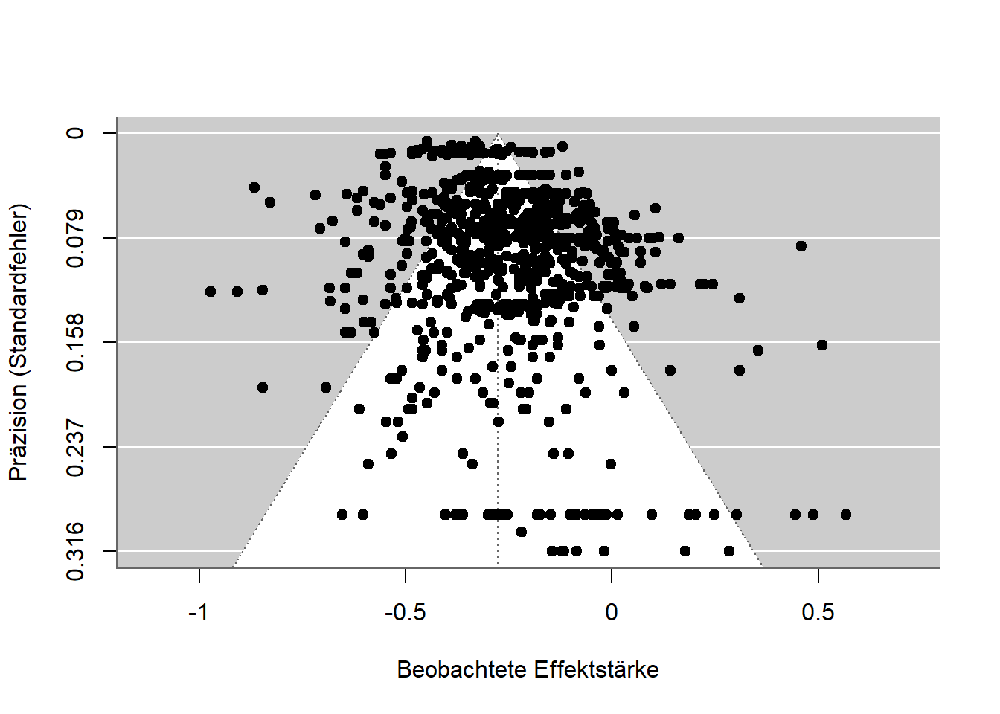
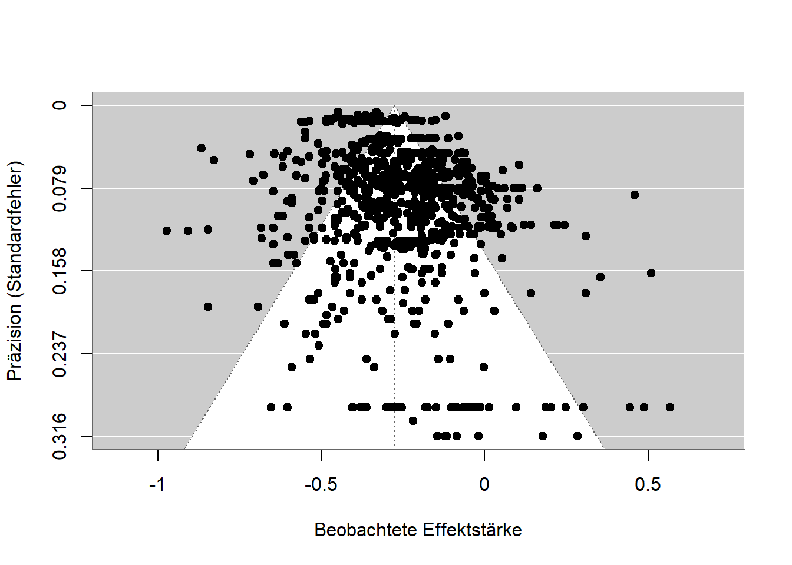
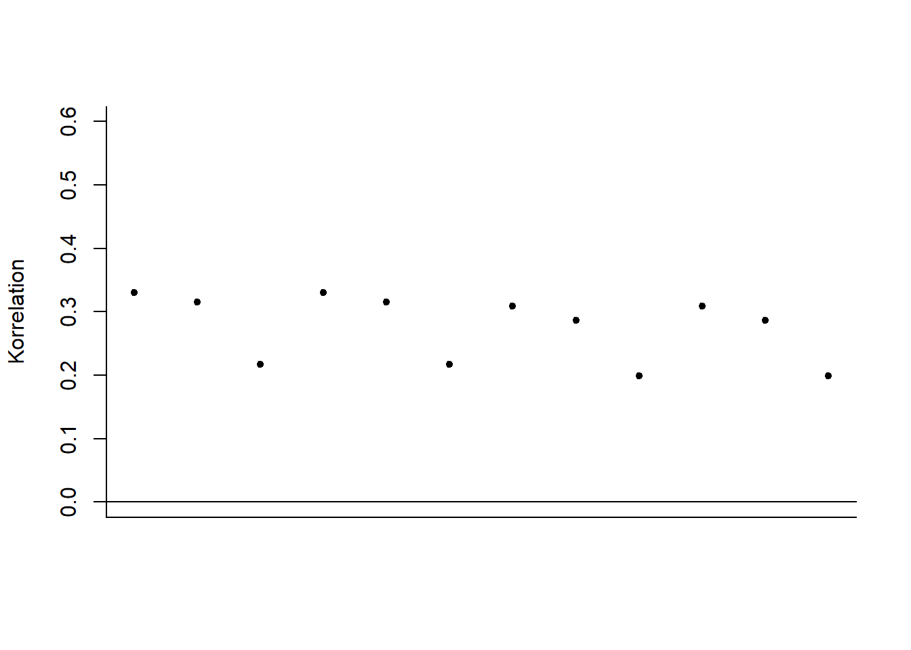
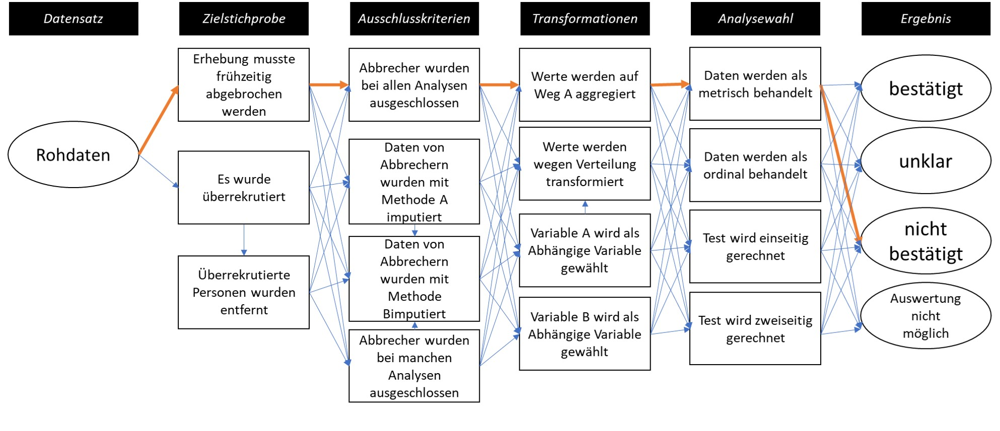

Warning: Paket 'psymetadata' wurde unter R Version 4.5.1 erstellt
In der Wissenschaft gibt es nicht die eine Methode (Feyerabend 1975/2002), sondern Methoden werden für Probleme entwickelt, Probleme gelöst und Methoden weiterentwickelt oder fallen gelassen. Methoden sind also wie Werkzeuge, und nicht alles lässt sich mit einem Schraubendreher zusammenbauen. Mit Open Science Reformen kommen unzählige Methodische Neuerungen, Verbesserungen, und Vorschläge, die für Forschende häufig überwältigend sind: Forschungsprojekte voranbringen, Seminare und Vorlesungen halten, Drittmittel einwerben, und jetzt auch noch Open Science? Während viele Probleme auf eine unzureichende Methodenausbildung zurückgeführt werden (Daniel Lakens 2021), die Forschende zu ihrer eigenen Last nachholen müssen, erleichtern einige Methoden die Arbeit. Für Promovierende wurde in der biologischen Psychologie beispielsweise der Wegweise ARIADNE entwickelt (https://igor-biodgps.github.io/ARIADNE/graph/graph.html). Dieses Kapitel bietet einen Überblick über methodische Entwicklungen und Diskussionen in den Sozialwissenschaften und Disziplinen, die vorrangig mit statistischen Methoden arbeiten.
Unter Meta-Analysen werden Studien über Studien verstanden. Dabei extrahieren Forschende üblicherweise Ergebnisse aus bereits veröffentlichten Studien, schreiben andere Forschende aus einem Feld an und fragen nach unveröffentlichten Studien, und analysieren mit statistischen Methoden die Gemeinsamkeiten und Unterschiede zwischen den Ergebnissen. Fletcher (2022) argumentiert, dass nur mithilfe von Meta-Analysen die Allgemeingültigkeit von (statistischen) Phänomenen nachgewiesen werden kann. Im Idealfall könnten alle so weitermachen wie bisher und meta-analytische Modelle würden die Probleme korrigieren. Angesichts verheerender Publikationsbiases ist das allerdings aktuell nicht möglich. Wie Meta-Analysen dennoch informativ sein können, empfehlen Carlsson u. a. (2024) allgemein und liste ich im Folgenden für spezifische Probleme auf.
Bei Meta-Analysen gilt: “Garbage in, garbage out”. Wer viele schlecht durchgeführte Studien in einer Meta-Analyse zusammenfasst, erhält eine schlechte Zusammenfassung. Das hatte beispielsweise zur Folge, dass Hagger u. a. (2010) ihrer Meta-Analyse einen deutlichen Effekt für ein Modell über die Willensstärke finden konnten, nachfolgende, groß angelegte Replikationsversuche und Analysen jedoch alle scheiterten, einen ebenso großen Effekt zu finden (Hagger u. a. 2016; Friese u. a. 2018; Dang u. a. 2020; Vohs u. a. 2021). Was trotzdem möglich ist und auch in jeder Meta-Analyse getan werden sollte, ist eine Einschätzung der Datenqualität, beispielsweise der Stärke des Publikationsbiases. Dabei gibt es Methoden, die prüfen, ob es nicht veröffentlichte Studien gibt, und Methoden, die für die potenziell fehlenden Studien korrigieren. Teilweise funktionieren diese erst bei über 200 Studien, manche lassen sich jedoch auch schon bei einem Dutzend Studien anwenden.
Eine der ältesten Methoden ist der Funnel Plot (Trichter-Diagramm) (Light und Pillemer 1984). Dabei werden Präzision und Effektstärke der einzelnen Studien in einem Diagramm dargestellt. Im Idealfall sollten die Punkte das Bild eines Trichters bilden: Je präziser eine Studie ist (zum Beispiel durch eine große Stichprobe), desto eher sollte der dort gemessene Zusammenhang im Mittel liegen. Unpräzisere Studien verschätzen sich unsystematisch, also sie liegen mal drüber und mal drunter. Dadurch, dass nicht signifikante Ergebnisse selten veröffentlicht werden, bildet sich in dem Trichter-Diagramm fast nie ein Trichter, sondern nicht-signifikante Ergebnisse fehlen einfach.
In der folgenden Abbildung ist ein Trichter-Diagramm für eine Studie zum Zusammenhang zwischen Angst vor Mathematik und Leistung in Mathematik. Das Muster ist fast symmetrisch, es liegt also nur ein schwacher Publikationsbias vor. Die kleinen Zusammenhänge am unteren Rand sind etwas nach rechts verzerrt, und die präzisen Effekte ganz oben sind nicht alle gleich groß, sondern variieren stark.
Warning: Paket 'psymetadata' wurde unter R Version 4.5.1 erstellt
Beim P-Hacking werden Daten auf verschiedene Weisen ausgewertet und es wird diejenige berichtet, die einen niedrigen und damit signifikanten P-Wert zur Folge hat. Ergebnisse werden also nicht signifikant, weil die Hypothesen korrekt sind, sondern weil die Daten so lange ausgewertet wurden, bis sie signifikant wurden. Im Kapitel P-Hacking konnten wir sehen, wie P-Werte verteilt sind, je nachdem ob die Hypothese korrekt ist oder nicht. Diese Tatsache macht sich die P-Curve (Simonsohn, Nelson, und Simmons (2014b); Simonsohn, Nelson, und Simmons (2014a); Simonsohn, Simmons, und Nelson (2015)) zu Nutzen. P-Werte eines Sets and Studien werden in einem Diagramm abgebildet und ihre Verteilung wird geprüft. Liegt kein P-Hacking vor sind die Werte entweder gleich verteilt (alle P-Werte kommen gleich häufig vor) oder sammeln sich bei 0 (kleinere P-Werte kommen häufiger vor). P-Hacking hat jedoch zur Folge, dass sich die Werte an der 5% Grenze tummeln, denn weiter als bis dort müssen die Daten nicht “gehackt” werden. Die Methode gewann vor allem deshalb an Bekanntheit, weil Simmons und Simonsohn (2017) die Methode auf eines der berühmtesten psychologischen Phänomene, dem Power Posing, angewandt haben und herausfanden, dass dort wahrscheinlich P-Hacking vorlag. Kritiker stellten später weitere Möglichkeiten vor, wie auch ohne P-Hacking eine suspekte P-Curve entstehen kann und das Verfahren wird inzwischen kaum mehr verwendet (Erdfelder und Heck 2019).
Statt P-Werte zu nehmen, können meta-analytische Befunde auch in sogenannte Z-Werte umgerechnet werden. Sie sind normalverteilt und mittels zusätzlicher Algorithmen lässt sich auf Basis von beobachteten Effekten schätzen, wie viele weitere Effekte es geben müsste. Dieses Verfahren namen Z-Curve (Bartoš und Schimmack 2022) kann also für den File-Drawer Effekt und für P-Hacking korrigieren. Das Ergebnis daraus ist auch eine Schätzung, wie hoch die Replikationsrate wäre, wenn alle analysierten Studien erneut durchgeführt würden. Aktuellen Studien zufolge funktionieren diese Schätzungen ziemlich gut, obgleich sie eine große Menge an Daten benötigen (Sotola und Credé 2022; Sotola 2023; Röseler 2023).
Ein Ansatz, welcher nicht nur bei Meta-Analysen sondern bei fast allen statistischen Auswertungen funktioniert, sind sogenannte Sensitivitäts- oder Robustheits-Analysen. Es werden dabei verschiedene Auswertungswege durchgegangen und dabei geprüft, wie stark sie sich auf die Ergebnisse auswerten. Bei Meta-Analysen können zum Beispiel viele mögliche Verfahren gleichzeitig gerechnet werden. Einen solchen Schrotschuss-Ansatz hat Kepes, Bushman, und Anderson (2017) geprägt, woraufhin er in anderen Studien übernommen wurde (Körner u. a. 2022). Einen Überblick über verschiedene Verfahren und unter welchen Bedingungen sie für Daten geeignet sind, bieten Carter u. a. (2019).
Ausgehend von verschiedenen Wissenschaften wurden Methoden entwickelt, unplausible Datenmuster zu identifizieren. Bei solchen Techniken wird beispielsweise geprüft, ob berichtete Werte möglich sind: Wenn 10 Personen entweder den Wert 0 oder 1 haben, kann der Mittelwert der 10 Werte beispielsweise nicht 0.15 sein, sondern nur 0, 0.1, 0.2, 0.3, … 1.0. Eine Sammlung von Leitfäden zur Prüfung auf solche Probleme ist die COSIG (Collection of Open Science Integrity Guides, Richardson (2025)).
Eine Meta-Analyse ist aufwändig und kann mehrere Jahre dauern. Selbst Forschende, die keine Mittel für Studentische Hilfskräfte haben, die ihnen beim Codieren und Prüfen von hunderten bis tausenden Studien helfen, haben hier kaum eine Chance, eine ordentliche Analyse durchzuführen. Die folgenden Daumenregeln - und mehr als das sollen sie auch nicht sein - bieten Abkürzungen zur Beurteilung wissenschaftlicher Qualität.
Seit einer Vertrauenskrise in der Sozialpsychologie in den 1960er Jahren (Daniel Lakens 2023) werden in Forschungsartikeln seitens vieler Zeitschriften mehrere Studien gefordert. Das hatte zur Folge, dass die Ressourcen statt in eine ordentliche Studie in mehrere kleinere Studien investiert wurden. Die meisten dieser “Multi-Study-Paper” haben dann ausschließlich signifikante Ergebnisse über bis zu 10 Studien hinweg. Während viele Studien mit durchweg signifikanten Ergebnissen auf den ersten Blick beeindruckend aussehen, lösen Sie beim näheren Hinsehen jedoch Skepsis aus: Einzelne Studien haben üblicherweise eine Wahrscheinlichkeit von 80-95%, dass dabei signifikante Ergebnisse bei der zentralen Analyse herauskommen. Diese Wahrscheinlichkeit (Statistische Teststärke oder Power) nimmt ab, wenn man mehrere Studien nacheinander durchführt. Es ist vergleichbar mit einem Schützen, der in 99% der Fälle mit einem Gewehr eine Glasflasche trifft. Die Wahrscheinlichkeit, dass er bei einem Schuss eine Glasflasche trifft ist also 99%. Die Wahrscheinlichkeit, dass er mit 50 Schüssen 50 Glasflaschen trifft ist weniger, nämlich 99%^50 (hoch fünfzig) = 60,5%. Bei wissenschaftlichen Studien kommt es auf ähnliche Weise zu einer “Power-Deflation”. Die Wahrscheinlichkeit, 4 signifikante Studien mit jeweils 80% Power durchzuführen, ist 40,96%. Dann eine genau solche Studie zu veröffentlichen ist extrem unwahrscheinlich (Daniël Lakens und Etz 2017).
Angelehnt an die Logik der P-Curve ist es unwahrscheinlich, dass P-Werte zwischen 1 und 5% liegen. Aufgrund von p-hacking kommt es allerdings häufig vor. Ein P-Wert nahe 5% geht außerdem mit einem Konfidenzintervall der Effektstärke nahe 0 einher (z.B. (jane2024?)). Angenommen jemand führt zwei Studien zu einem Thema durch und beide haben P-Werte nahe 5% und ungefähr gleich große Versuchspersonen-Anzahlen, dann kommt die Frage auf, weshalb die Stichprobengröße für die spätere Studie nicht erhöht wurde: Auf Basis eines gerade so signifikanten Ergebnisses ist klar, dass man “Glück” hatte, da die statistische Power nicht sonderlich hoch war. Plant man also die Stichprobe für die nächste Studie, sollte man die erste Studie dabei zugrund legen und den Plan anpassen (z.B. Daniël Lakens (2021a)).

Wird ein Befund mit denselben Daten und idealerweise demselben Programm bzw. Analysecode erneut getestet und geprüft, ob dieselben Zahlen dabei rauskommen - also nicht nur, ob die Hypothese erneut bestätigt wird - dann handelt es sich um eine Reproduktion der Ergebnisse. Im Gegensatz zu einer Replikation werden also keine neuen Daten erhoben. Dass Ergebnisse reproduzierbar sind, sollte das absolute Minimum für wissenschaftliche Berichte sein, ist es jedoch noch längst nicht. In nur seltenen Fällen gibt es Reproduktionen, die mittlere Rate über Felder hinweg (Wirtschaftswissenschaften, Erziehungswissenscahften, Biomedizin, Gesundheitswissenschaften, Geowissenschaften) liegt bei circa 50% (Cobey u. a. 2023; C. Chang und Li 2022; Koukouraki und Kray 2023) und nicht einmal einfache Analysen mit Programmen, die explizit Protokolle zur Reproduzierbarkeit ausgeben ist extrem nierig (Thibault u. a. 2024).
Während der Begriff Replikation in den Wirtschaftswissenschaften sowohl die Prüfung einer vorliegenden Studie mit neuen Daten, als auch die erneute Prüfung mit denselben Daten meint, wird für letzteres in der Psychologie Reproduktion verwendet. In der biologischen Forschung über Fortpflanzung, der Reproduktionsforschung, wird außerdem auf Reproduzierbarkeit ausgewichen. In wieder anderen Fällen wie der Open Science Collaboration (2015) wird bei Replikationen (neue Daten) von “Reproducibility” gesprochen und wiederholte Tests mit denselben Daten werden “komputationale Reproduzierbarkeit” (computational reproducibility) genannt. Zuletzt verschwimmen in manchen Bereichen die Grenzen, wenn zum Beispiel bei einer Replikation der Befunde der Pisa Studie teilweise dieselben Daten und teilweise neue verwendet werden oder wenn die Daten computergeneriert sind und dasselbe Programm fähig ist mittels Pseudozufallszahlengenerator andere Daten zu generieren, die aber dieselbe Struktur haben.
Seit wenigen Jahren führt die Zeitschrift Meta-Psychology als eine der ersten in der Psychologie für alle veröffentlichten Artikel Reproduzierbarkeits-Prüfungen durch. Diese werden durch Forschende freiwillig oder im Rahmen ihrer Tätigkeit bei der Zeitschrift durchgeführt. Während diese Praxis bereits für andere Zeitschriften gefordert wurde (Lindsay 2023), ist es jedoch noch immer die Ausnahme. Reproduktionschecks aller möglicher Disziplinen können bei Rescience veröffentlicht werden (http://rescience.github.io). Unabhängig von Zeitschriften bietet die Codecheck community für jegliche Forschungsartikel an, den Code darauf zu prüfen, ob er funktioniert und sich Ergebnisse nachrechnen lassen (Nüst und Eglen 2021). Artikel mit geprüftem Code können dann auf den CODECHECK Bericht verweisen, der als öffentlicher Artikel bei Zenodo.org hochgeladen ist.
Für das Jahr 2024 hat das Institute for Replications angekündigt, Studien aus der Zeitschrift Nature Human Behavior zu reproduzieren („Promoting reproduction and replication at scale“ 2024). Nature Human Behavior ist eine der angesehensten Zeitschriften bei der Erforschung menschlichen Verhaltens, wobei angesehen nicht mit wissenschaftlicher Qualität gleichzusetzen ist. Sie wird vom Springer Verlag verwaltet und fordert mit Publikationskosten in Höhe von circa 9000€ pro Artikel die höchste Gebühr. Die strategische Entscheidung, sich auf die dortigen Artikel zu konzentrieren hat den Vorteil, dass Personen, die die Reproduzierbarkeits-Checks durchführen, diese eventuell dort veröffentlichen können und dass Reproduktionen große Aufmerksamkeit erfahren. Angesichts des Qualitätsanspruches solcher Zeitschriften an ihre Qualität und der Tatsache, dass kostenlose Zeitschriften wie Meta-Psychology die Prozedur ohne externe Hilfe durch das Institute for Replication durchführen können, bildet sich hier wieder das bekannte Bild ab, bei dem Verlage ihr Prestige dafür missbrauchen, kostenlose und profit-generierende Arbeit aus der Wissenschaft zu ziehen. Am Ende ist es wieder nicht die Zeitschrift selbst, die zur wissenschaftlichen Qualitätssicherung beiträgt, sondern das Institute for Replication.
Eine Abkürzung bei der Prüfung von Korrektheit, welche bei vielen Zeitschriften verwendet wird, ist das Programm statcheck. Es erkennt automatisch klassische statistische Tests und prüft auf Basis der berichteten Werte, ob diese konsistent sind. Hartgerink (2016) hat Ergebnisse aus über 50.000 Artikeln mit dem Programm geprüft und die Artikel mittels Pubpeer kommentieren lassen. Weil der Algorithmus in seltenen Fällen - wie in den Kommentaren offen dargelegt - fälschlicherweise Werte als fehlerhaft markiert und die Autor*innen der Artikel zuvor nicht vor den Kommentaren gewarnt wurden, hat die DGPs das Vorgehen verurteilt. Die Antworten der Statcheck-Gruppe und von Christ Hartgerink sind nicht mehr verfügbar.
Mit sogenannten Push-Button-Replications ist gemeint, dass Ergebnisse ohne großen Aufwand und von allen Forschenden nachgerechnet werden können - auf Knopfdruck eben. Während sozialwissenschaftliche Zeitschriften mehr und mehr fordern, Daten und Analysecode so zu veröffentlichen, dass die Ergebnisse nachgerechnet werden, verkörpert die Zeitschrift Image Processing Online (IPOL, https://www.ipol.im) das Ideal dieses Vorgehen: Zu jedem dort veröffentlichten Artikel ist eine Demo verfügbar, bei der nach Auswahl eines Bildes, der in dem Artikel veröffentlichte Algorithmus live durchgeführt wird.
In verschiedenen Forschungsdisziplinen gibt es großangelegte Projekte, Reproduzierbarkeit für vollständige Disziplinen zu schätzen. Ein Pionier auf dem Gebiet war das ReplicationWiki von Höffler (https://replication.uni-goettingen.de). Nachfolgende Projekte wie das Replication Network (https://replicationnetwork.com) stützten sich weitesgehend auf die dort zusammengefassten Daten. Für die Wirtschaftswissenschaften berichteten Brodeur, Mikola, und Cook (2024) eine Reproduzierbarkeitsrate von 70% und in den Management Sciences bei 55% (Fišar u. a. 2024). Mit dem Insitute for Replication (I4R) überschneidet sich außerdem die Social Science Reproduction Platform des Berkley Initiative for Transparency in the Social Sciences (BITSS); https://www.bitss.org/resources/social-science-reproduction-platform). Während das I4R 2024 eine Datenbank mit allen Ergebnissen veröffentlichte, ist die Plattform der BITSS bereits verfügbar. Neben diesen vorwiegend wirtschafts- und politikwissenschaftlichen Initiativen wird in dem interdisziplinären Projekt Multi100 die Robustheit von 100 Ergebnissen aus verschiedenen Bereichen erforscht (https://osf.io/q5h2c). Ein aus der Psychologie stammendes und abgeschlossenes Projekt war das Angebot einer Universität, Arbeiten von Forschenden auf Reproduzierbarkeit zu prüfen (Baker u. a. 2023). In den Geowissenschaften bietet CODECHECK (https://codecheck.org.uk) eine Community, in welcher Forschende die einmalige Reproduzierbarkeit von Code zertifizieren. Eine Zeitschrift, die Reproduzierbarkeitsprüfungen veröffentlicht, ist Rescience C (https://rescience.github.io).
Öffentlich verfügbare Daten und Code sind notwendig für Reproduktions- und Robustheits-Checks. Zeitschriften stehen hier zwischen der Entscheidung, Einreichungen schwieriger und sich selbst damit weniger attraktiv zu machen, indem sie höhere Anforderungen stellen, und die wissenschaftliche Qualitätssicherung zu fördern. Ein ähnliches Problem herrscht auch bei Betreibern von Panels, in denen regelmäßig große Befragungen oder Leistungstest, wie zum Beispiel die PISA Studie oder das Sozio-Ökonomische-Panel (SOEP). Bei Analysen der SOEP-Daten wird der Code nur in 20% der Fälle geteilt (https://www.wifa.uni-leipzig.de/fileadmin/Fakultät_Wifa/Institut_für_Theoretische_Volkswirtschaftslehre/Professur_Makroökonomik/Economics_Research_Seminar/ERS-Paper_Marcus.pdf)
Ähnlich wie die Sensitivitäts- oder Robustheitsanalysen lassen sich auch bei einzelnen Studien weitere Wege im “Garden of Forking Paths” gehen. Zur Erinnerung: Der Weg von Daten zu Ergebnissen ist lang und beinhaltet viele verschiedene Entscheidungen. Um zu zeigen, dass das Ergebnis eben nicht von diesen Entscheidungen abhängt, kann gezeigt werden, wie die Ergebnisse aussehen, wenn andere Entscheidungen getroffen werden würden. Der Extremfall dieser Robustheits-Analysen ist die Multiversum-Analyse (siehe z.B. Mazei u. a., o. J. für Empfehlungen). Hier wird versucht, alle möglichen Entscheidungen gleichzeitig zu treffen. Die daraus resultierenden Ergebnisse werden dann wieder in irgendeiner Form analysiert (z.B. gemittelt) oder dargestellt (Jacobsen u. a. 2024). Eine weitere Möglichkeit ist die der Multi-Analyst-Study. Dabei geht es um die Abhängigkeit der Ergebnisse von den Entscheidungen verschiedener Forschenden und viele Personen analysieren die Daten unabhängig voneinander. Es wird schließlich geprüft, wie stark die Ergebnisse zwischen den Forschenden übereinstimmen.
In der folgenden Abbildung wurde für einen festen Datensatz (Fantasiedaten) verschiedene Analysemethoden verwendet. Dabei wurden verschiedene Typen von Korrelationen, verschiedene Stichprobenumfänge, und verschiedene Hypothesen verwendet. Das Ergebnis ändert sich dabei jedes mal ein bisschen, sodass der Wert zwischen 0,20 und 0,35 liegt, die positive (und signifikante) Korrelation bleibt aber erhalten.

In der online-Version dieses Buches gibt es die Möglichkeit, vor Abbildungen einen Code anzeigen zu lassen. Mit diesem Code lässt sich die Abbildungen ganz einfach rekonstruieren bzw. reproduzieren. Auch Forschungsartikel können auf diese Weise geschrieben werden. Text, Programmiercode, sowie Ergebnisse als Zahlen, Tabellen, und Diagramme werden in einem einzelnen Programm geschrieben und Forschende ersparen sich das Kopieren oder Abtippen von Zahlen. Das Nachrechnen von Ergebnissen wird außerdem stark vereinfacht. Programmiersprachen basieren auf der sogenannten Markdown Sprache und in Programmen können unzählige weitere Programmiersprachen eingebettet sein.
Während Forschende oft nicht die Expertise oder die Zeit haben, ihre Manuskripte reproduzierbar zu gestalten, gibt es bereits Pilotprojekte (Baker u. a. 2023) und Zeitschriften (Carlsson u. a. 2017), die Forschende unterstützen. In Kombination mit Multiversum-Analysen ist es in Forschungsartikeln im Internet außerdem möglich, den Text so zu erstellen, dass er interaktiv auf alternative Analyse-Entscheidungen reagiert. Leser*innen können also im Manuskript Entscheidungen treffen und direkt sehen, wie sich die Ergebnisse ändern.
Es sind wahrscheinlich alle Forschungsdisziplinen, die Statistik verwenden, von der Replikationskrise betroffen. Ganz im Sinne von “post hoc ergo propter hoc” (danach, also deswegen), wird diese Tatsache häufig so interpretiert, dass das Verwenden statistischer Methoden die Ursache für die Replikationsprobleme ist. Während dagegen argumentiert wird, dass die Methoden nur falsch verwendet werden (Daniël Lakens 2021b), schlagen manche Forschende auch Veränderungen oder Alternativen vor. Eine Gruppe 72 von Psycholog*innen hat beispielsweise gefordert, die Signifikanzgrenze für neue Befunde von 5% auf 0,5% herunterzusetzen (Benjamin u. a. 2018), sodass p-hacking erschwert wird. Andere schlagen vor, das Null Hypothesis Significance Testing (NHST, Null-Hypothesen-Signifikanztesten) komplett zu verbannen und andere Methoden zu verwenden: Wagenmakers (2007) plädiert für Bayesianische Statistik, und die Zeitschfit Basic and Applied Psychology verbietet die Verwendung von Signifikanztests, was das Problem von falsch-positiven Befunden möglicherweise noch vergrößert hat (Fricker Jr u. a. 2019).
Durch die häufigen befristeten Verträge und viele Wechsel zwischen Universitäten aber auch durch Abbrüche von Promotionen oder Ausscheiden aus der Wissenschaft durch das Wissenschaftszeitvertragsgesetz müssen Projekte an andere Forschende übergeben werden. Wenn die Forschungsmaterialien und -daten nicht dokumentiert und aufbereitet sind, gehen dadurch Zeit und Arbeit verloren. Im Extremfall wurden in einem Labor Tiere aufgezogen und operiert und die Untersuchung kann nicht weitergeführt werden. Open Data und Materials (Offene [Forschungs]Daten und offene [Forschungs]Materialien) haben den Zweck, das zu verhindern, gemeinsames Arbeiten zu ermöglichen, und Fehler korrigierbar zu machen. In extremeren Fällen versuchen Forschende, Artikel mit gefälschten Daten zu veröffentlichen. Nur an den Stellen, an denen offen zugängliche Daten verfügbar sind, kann dieser Betrug auffallen (Carlisle 2021).
Zahlreiche Untersuchungen konnten bereits zeigen, dass Daten auch auf Anfrage häufig nicht geteilt werden, und dass sich das im Zuge der Replikationskrise nicht verändert hat(Vanpaemel u. a. 2015). Ob Daten geteilt werden gibt darüber hinaus keinen Aufschluss darüber, ob darin Fehler sind (Claesen u. a. 2023). Mehr und mehr Zeitschriften fodern die Veröffentlichung von Daten (z.B. https://topfactor.org/journals?factor=Data+Transparency), Drittmittelgeber fordern Datenmanagementpläne, Werkzeuge zur automatischen Datenaufbereitung befinden sich in der Entwicklung (https://leibniz-psychology.org/das-institut/drittmittelprojekte/datawiz-ii), und viele Forschungsdaten-Repositorien - also Websites, auf denen Daten hochladbar und auffindbar sind - sind entstanden.
Die wichtigsten Voraussetzungen dafür, dass Forschende Daten teilen können, sind die Zustimmung der Versuchspersonen (falls vorhanden), Anonymisierung falls nötig (z.B. bei Daten über Gesundheit oder politischer Einstellung), und die Rechte an den Daten. Die Zustimmung von Versuchspersonen werden standardmäßig vor Beginn von Untersuchungen erfragt, Anonymisierung geschieht bei der Erhebung oder im Nachhinein (z.B. bei qualitativen Daten mittels AMNESIA), und die Rechte liegen üblicherweise nur dann nicht vor, wenn die Daten für ein Unternehmen erhoben wurden. Der wohl schwierigste Teil ist die Anonymisierung. Campbell u. a. (2023) berichten beispielsweise, wie sie Berichte von Überlebenden sexueller Übergriffe mittels eines mehrstufigen Prozesses anonymisiert haben, bei denen Namen, Daten, Orte, Trauma-Historien, und weitere sensible Daten zensiert wurden.
Je nach Fach und Institution werden Forschungsdaten an unterschiedlichen Stellen archiviert. Universitäten haben häufig eigene Services, für die Auffindbarkeit bieten sich aber üblicherweise fachspezifische Repositorien an: Psycholog*innen nutzen häufig das Open Science Framework (OSF), PsychArchives vom Leibniz-Institut für Psychologie, oder Researchbox.org. Für die Wirtschaftswissenschaften bietet das Leibniz-Institut für Sozialwissenschaften mit GESIS verschiedene Hilfen. Mit LISTER wird in der Chemie an Software gearbeitet, mittels derer Daten auf Basis von elektronischen Laborbüchern halbautomatisiert beschrieben werden können. Re3data bietet eine Übersicht über Forschungsdatenrepositorien (z.B. nach Fächern).
| Fach | Repositorium |
|---|---|
| Interdisziplinär, vorwiegend Psychologie | osf.io |
| Sozialwissenschaften | data.gesis.org |
| Politik- und Sozialwissenschaften | icpsr.umich.edu |
| Lebenswissenschaften | Pangaea.de |
| Kunst- und Geistewissenschaften | de.Dariah.eu |
| Linguistik | Clarin.eu |
| Biologie | gfbio.org |
| Materialwissenschaften | nomad-lab.eu |
| Qualitative Daten | qdr.syr.edu |
| Interdisziplinär | openbis.ch |
| Interdisziplinär | about.coscine.de |
| Interdisziplinär | frdr-dfdr.ca/repo |
Über Repositorien können Forschungsdaten per Mausklick veröffentlicht werden. Wenn weitere Funktionen wie interaktive Analysen oder ein Peer Review gewünscht ist, nutzen Forschende darauf abgestimmte Werkzeuge und Fachzeitschriften. Psychologische Datensätze können beispielsweise im Journal of Open Psychology Data veröffentlicht werden, das R-Paket PsyMetaData (Rodriguez und Williams 2022) enthält Daten aus psychologischen Meta-Analysen, und die Zeitschrift Inggrid veröffentlicht Daten aus den Ingenieurswissenschaften.
Auf dafür erstellten Websites können Forschende bei MOCODA auf Daten von Chatverläufen zugreifen, die freiwillig und anonymisiert von Personen geteilt wurden, bei CODA Daten zur menschlichen Kooperation herunterladen, oder bei OpAQ Schätzurteile analysieren.
Das bloße Hochladen von Forschungsdaten auf eine Website reicht nicht aus, um Forschung transparenter zu machen. Üblicherweise werden die Daten in dem Forschungsartikel, in dem sie verwendet wurden, verlinkt und es wird ein Codebook bereitgestellt, in dem steht, welche Werte was bedeuten.
Die Tabelle zeigt einen Ausschnitt aus einem Fantasie-Datensatz mit drei Variablen. Üblicherweise enthalten Datensätze viele weitere Daten (z.B. die Abiturnote aufgeteilt in verschiedene Fächer, Demografische Daten wie Alter und Geschlecht, Datum der Befragung, ggf. Variablen mit kryptischen Namen wie “V1_Z01”, “V0815”). Hier sind die drei Variablen (also Spalten) “ID”, welche eine fortlaufende Zahl ist um verschiedene Versuchspersonen zu kennzeichnen, IQ, mit welchem ein gemessener IQ von einem bestimmten Intelligenztest angegeben wird, und die Abiturnote, die Personen selbst berichten sollten. Das Codebuch enthält diese Informationen.
| ID | IQ | Abiturnote |
|---|---|---|
| 1 | 103 | 2,6 |
| 2 | 86 | 2,4 |
| 3 | 112 | 1,8 |
Interdisziplinär wurden die FAIR Prinzipien für Forschungsdaten entwickelt. Sie empfehlen, Daten auffindbar (Findable), zugänglich (Accessible), von verschiedenen Computern lesbar (Interoperable), und wiederverwendbar (Resusable) zu archivieren. De Waard (2016) strukturiert Anforderungen pyramidenförmig mit der Speicherung als Fundament, dem Teilen darüber, und der Qualitätssicherung als Spitze. Laut einem EU-Bericht belaufen sich die jährlichen Kosten dafür, dass Daten nicht den FAIR Prinzipien entsprechen, auf 10,2 Milliarden Euro. Disziplin-spezifische Vorlagen, um geteilte Daten FAIR zu machen, werden derzeit vom Center for Open Science entwickelt (www.cos.io/blog/cedar-embeddable-editor).
Einen weiteren Schritt gehen die CARE-Prinzipien. Sie wurden für Datenerhebung zu einheimischen Völkern entworfen. Aufbauen auf FAIR fordern sie einen kollektiven Nutzen (collective benefit) der Daten, beispielsweise durch Verwendbarkeit durch die Gesellschaft wie es bei Hochwassergefahrenkarten der Fall ist oder durch Bürgerbeteiligung wie bei Münsters “Coolem Stadtplan”, der Orte, an denen es an heißen Tagen kühl ist, eintragen lässt. Den Personen, die mit den Daten abgebildet werden, muss eine Autorität zur Kontrolle (authority to control) gegeben werden, das heißt, sie sollen Mitbestimmungsrecht über das Aussehen der Daten haben. Zur Wahrung ihrer Selbstbestimmung sollten Daten außerdem verantwortlich (responsible) geteilt werden und ihre Rechte und ihr Wohlergehen sollten bei der Forschung im Zentrum stehen (ethics). Wenn Nicht-Wissenschaftler*innen aktiv an der Datenerhebung oder -aufbereitung beteiligt sind, ist die Rede von Citizen Science (Bürger*innen Wisssenschaft). Beispielsweise können Personen ihre gesammelten Liebesbriefe an das Liebesbriefarchiv senden, bei welchem die deutsche Sprache, Umgangsformen, und Kulturwandel umfangreicher als nur mithilfe von einzelnen berühmten Gelehrten erforscht werden kann oder Personen können von ihrem privaten Rechner über das Internet Weltraumteleskope bedienen (http://www.aim-muenster.de). Dabei ist nicht gemeint, dass Laien Forschung durchführen, auf deren Basis sie “klassische” Forschung widerlegen (Levy 2022), sondern, dass sie Einblicke in den Forschungsprozess erhalten und zum Erkenntnisgewinn unter Anleitung mitwirken können.
Wenn Regierungen Unternehmen beauftragen, Fragestellungen zu beantworten, können Bürger*innen die Daten dafür anfragen. Für das Vereinigte Königreich gibt es beispielsweise die Platform WhatDoTheyKnow, in Deutschland ist das Analog FragDenStaat. In einer Studie haben Maier u. a. (2024) solche Daten verwendet, um zu prüfen, ob dort Empfehlungen zu Open Science Praktiken berücksichtigt wurden.
Der Diskurs um Open Science ist hin und wieder sehr aufgeladen: Forschende, die nach Daten fragen oder diese Nutzen um Fehler zu identifizieren, werden als Datenparasiten, Datenpolizei, oder sogar Datenterroristen bezeichnet. Die Aussage, “wer nichts zu verbergen hat, hat auch nichts zu befürchten”, hat einen dystopischen Beigeschmack und Forschende machen sich in politisch aufgebrachten Zeiten und im Angesicht von Plagiatsjägern ungern durchsichtig. Es ist in diesem Kontext aber zu Berücksichtigen, dass es bei Wissenschaft nicht um ein eigenbrötlerisches Hobby handelt, sondern um einen Beruf mit gesellschaftlicher Verantwortung. Wer hier etwas verbirgt, sollte zurecht unter Verdacht stehen, keine ordentliche Wissenschaft zu machen. An der Universitäts- und Landesbibliothek Münster stehen passend dazu an der Außenwand die großen roten Buchstaben: “Gehorche keinem”. Bilde dir stattdessen deine eigene Meinung, geh in die Werke und die Daten der Forschenden und überzeuge dich selbst von der Wahrheit. Wenn Forschende ihre Daten nicht teilen und Artikel hinter Bezahlschranken veröffentlichen, bedeutet das eine unnötige Erschwerung der unabhängigen Meinungsbildung.
Daten zu teilen steht oft das Ziel entgegen, anderen Forschenden gegenüber einen Wettbewerbsvorteil zu haben. Das bedeutet, dass Forschende ihre Daten zurückhalten, möglichst viele Artikel auf deren Basis veröffentlichen, und erst wenn dort “nichts mehr zu holen ist”, die Daten teilen. Die Sorge ist, dass andere Forschende schneller darin sind, Forschungsartikel auf Basis der Daten zu veröffentlichen. Faktisch werden die Daten schließlich gar nicht veröffentlicht. Bei dieser Sorge ist wichtig, nachzuvollziehen, dass Daten teilen nicht Daten verschenken bedeutet. Beim Teilen müssen Forschende eine Lizenz angeben, die beispielsweise das Zitieren der Daten vorgibt. Halten sich andere Forschende nicht daran, riskieren sie ihre Karriere. Darüber hinaus ist es einfacher nachzuweisen, wer die Daten ursprünglich erhoben hat, wenn die Person sie frühzeitig veröffentlicht.
Gelegentlich wird für Open Data damit geworben, dass Forschung dadurch mehr Zitate erhält. Das motiviert einige Wissenschaftler*innen mehr als die gute wissenschaftliche Praxis, ist aber wahrscheinlich nicht (Colavizza u. a. 2020).
Drittmittelgeber fordern gelegentlich Langzeitarchivierung. Das bedeutet je nach Kontext, dass die Daten 20 oder 50 Jahre lange gespeichert werden und abrufbar sein müssen. Eine etwas extreme Variante der Langzeitarchivierung wurde mit Daten auf Github.io durchgeführt: Dort wurden alle Daten, die am 02.02.2020 hochgeladen waren, gespeichert und in einer alten Kohlemine in Norwegen gebracht. Dort sollen sie bis zu 1000 Jahre verbleiben können.
Die bisherigen Ansätze wie Meta-Analysen oder Reproduzierbarkeits-Prüfungen können häufig für bestehende Projekte durchgeführt werden. Bei den folgenden Lösungsvorschlägen gestaltet sich das allerdings schwieriger - sie sind vor allem für neue Forschung geeignet und haben das Ziel, die Replizierbarkeit von neu veröffentlichten Studien zu erhöhen. Das beinhaltet strengere methodische Standards oder Replikationen vor der Publikation (“internale Replikationen”, engl. internal replication), wie es beispielsweise in der genetischen Epidemiologie der Standard ist. Als positiver Nebeneffekt kommt hier dazu, dass sich Forschungsgruppen für Replikationsstudien zusammenschließen und Daten austauschen (Arts und Sciences 2018). Wie im Fazit des Buches erörtert, ist eine allgemeine, fächerübergreifende Aussage darüber, ob diese Vorschläge sich tatsächlich auf Replizierbarkeit auswirken aufgrund von seltenen Replikationsstudien schwierig. Selbst in der Sozialpsychologie sind Replikationen aktuell noch immer die am schwächsten umgesetzte Maßnahme unter allen Empfehlungen zu Open Science (Glöckner u. a. 2024). So oder so ist der Sinn der Maßnahmen, die allgemein die Transparenz von Forschung erhöhen, im Hinblick auf Replikationsschwierigkeiten und P-Hacking deutlich.
Aczel u. a. (2020) haben eine Transparency Checklist entworfen, die Forschende Punkt für Punkt durchgehen können, um zu prüfen, ob ihr Forschungsbericht transparent ist. In der Online-App (https://www.shinyapps.org/apps/TransparencyChecklist/) kann anschließend ein Bericht daraus generiert werden, der an den Forschungsartikel angehängt werden kann. Die Checkliste ist in die Themen Präregistrierung, Methoden, Ergebnisse, und Daten/Code/Materialien eingeteilt. Beispielsweise wird in Bezug auf die Ergebnisse gefragt, ob die Anzahl an Beobachtungen für alle Gruppen angegeben wurde. Die Checkliste ist aktuell in ca. 30 Sprachen verfügbar, darunter auch Deutsch. Die Liste von Aczel u. a. (2020) ist allerdings primär für quantitative Studien geeignet. Für qualitative und gemischte Studien haben Symonds und Tang (2024) ein Bewertungsschema entworfen.
Eine weitere und kürzere Variante ist die 21-Worte-Lösung. Dabei wird eine vorgeschlagene Erklärung (Simmons, Nelson, und Simonsohn 2012) in den Bericht aufgenommen und versichert, dass keine Studien(ergebnisse) vorenthalten wurden. Sie ist bei weitem nicht so sicher und umfangreich wie die Transparenz-Checkliste, fördert aber niedrigschwellig die Auseinandersetzung mit Transparenz von Forschungsberichten.
Für Tierstudien wurden die ARRIVE Richtlinien entwickelt. Darauf aufbauend zielen die LAG-R Standards darauf ab, die genetische Ausstatung (genetic make-up) der untersuchten Tiere klar zu berichten (Teboul u. a. 2024).
Forschung ist entweder konfirmatorisch (d.h. Forschende haben sich im Vorhinein klare Gedanken dazu gemacht, welche Daten sie erheben, welche Analysen sie rechnen, und was dabei die möglichen Ergebnisse sein könnten), oder exploratorisch (d.h. Forschende versuchen, unvoreingenommen an eine Sache heranzugehen und dabei Fragen für zukünftige, möglicherweise konfirmatorische Forschung, zu generieren). Wann immer Forschung konfirmatorisch ist, sollte sie präregistriert sein. Das bedeutet, dass alle Gedanken, die sich Forschende im Vorhinein gemacht haben sollten, vor der Datenerhebung niedergeschrieben werden sollten. Präregistrierungen sollen damit verhindern, dass sich Forschende in einem Garden of Forking Paths befinden, bzw. helfen sie, den Pfad im Vorhinein festzulegen, damit es im Nachhinein nicht mehr möglich ist, den Pfad zu ändern, um die gewünschten Ergebnisse zu generieren.

Eine gute Päregistrierung ist dadurch gekennzeichnet, dass Forschende sich damit aller Freiheitsgrade berauben (Wicherts u. a. 2016) und alle Entscheidungen, die sie auf dem Weg von den Daten zu den Ergebnissen fällen, vorweg nehmen. Darüber hinaus sollten Präregistrierungen gut strukturiert sein, damit andere Personen leicht nachprüfen können, was vorher festgelegt wurde (Simmons, Nelson, und Simonsohn 2020). Um alle nötigen Entscheidungen (z.B. Umgang mit fehlenden Werten oder geplante Anzahl an befragten Personen) strukturiert festzuhalten, gibt es Präregistrierungs-Vorlagen (Templates). Diese existieren für alle möglichen Bereiche, wie sozialpsychologische Experimente (van ’t Veer und Giner-Sorolla 2016) oder Replikationsstudien (Brandt u. a. 2014). Eine Sammlung von über 20 Vorlagen mit Verwendungszwecken ist hier verfügbar. Forschende, die noch wenig Erfahrung in bestimmten Bereichen haben, werden durch das Template unterstützt. Beispielsweise enthalten Preregistration-Templates für Meta-Analysen Übersichten von Literaturdatenbanken und beinhalten bereits Goldstandards zu transparenten Berichten [PRISMA; (DavidMoher?).]. Darüber hinaus können die Unterlagen der Präregistrierung für das Manuskript weiterverwendet werden.
Die Methode der Präregistrierung hat sich in der Psychologie entwickelt. Dabei hat sie sich auf die Registrierung von Studien mit menschlichen Versuchspersonen in der Medizin und Registrierung von Meta-Analysen gestützt. Sie ist wie einige andere Modelle ohne größere Anpassungen auf viele andere Bereiche übertragbar, wie zum Beispiel der Paläontologie (Drage und Wong Hearing 2023).
Bezüglich der Verbreitung von Präregistrierungen existiert der Konflikt, ob sie möglichst einfach und ressourcenschonend eingeführt werden sollten, oder ob umfangreiche und aufwändig erstellte Präregistrierungen gefordert werden sollten. Beispielsweise besteht das häufig genutzte Template von aspredicted.org aus nur 11 Fragen und beinhaltet nicht die Möglichkeit, den Analysecode oder andere Dateien anzuhängen. Da der Zweck von Präregistrierungen das Verhindern von P-Hacking ist, sind Kompromisse beim Umfang von Präregistrierungen unsinnig.
Der Analyse-Code basiert auf einem bestimmten Programm und einer entsprechenden Programmiersprache und führt die Aufbereitung der Daten (z.B. Berechnung von Scores, Ausschluss von Beobachtungen) und die Analysen durch. Traditionell wird er nach Erhebung der Daten geschrieben. Dadurch kann es passieren, dass Studien wertlos sind, weil erst nach der Datenerhebung auffällt, dass die geplanten Analysen nicht möglich sind, und dass Studien so ausgewertet werden, dass dabei die gewünschten Ergebnisse herauskommen (p-hacking). Akker u. a. (2023) konnten für psychologische Forschungsartikel nicht nachweisen, dass Präregistrierungen gegen P-Hacking wirken, haben aber nicht zwischen Präregistrierungen mit und ohne Analyseplan differenziert. Für Registered Reports, bei denen üblicherweise ein ausgearbeiteter Analyseplan gefordert wird, konnten Scheel, Schijen, und Lakens (2021) zeigen, dass der Anteil an hypothesenkonformen Ergebnissen stark absinkt. Brodeur u. a. (2024) konnten mit tausenden statistischen Tests aus wirtschaftswissenschaftlichen Forschungsartikeln nachweisen, dass Präregistrierung nur dann gegen P-Hacking wirkt, wenn ein Analyse-Plan vorliegt. Vom Analyse-Plan unterscheidet sich der Analyse-Code dadurch, dass er unmissverständlich ist. Im Plan könnte beispielsweise stehen “wir berechnen die Korrelation zwischen Variable X und Variable Y und prüfen, ob sie signifikant ist”. Dabei wird nicht spezifiziert, welches Signifikanzniveau verwendet wird, ob ein einseitiger oder zweiseitiger Signifikanztest durchgeführt wird, welche Art der Korrelation berechnet wird (Produkt-Moment, Spearman, Kendall), wie mit fehlenden Werten umgegangen wird, usw. Die Wahrscheinlichkeit, ein signifikantes Ergebnis zu erhalten, wenn die wahre Korrelation 0 ist, steigt dann von dem festgelegten Signifikanzniveau von beispielsweise 5% auf 10%. Das kann mit Programmiercode (z.B. “cor.test(x, y)”) nicht passieren, da dort klar definiert ist, welche Standardeinstellungen verwendet werden, wenn etwas nicht spezifiziert ist. Gutachter*innen von Forschung sollten also klar darauf achten, was alles zur Präregistrierung gehört (Thibault, Pennington, und Munafò 2023).
„Je planmässiger Menschen vorgehen, desto wirksamer trifft sie der Zufall” heißt es in Friedrich Dürrenmatts 21 Punkten zu “Die Physiker” (durrenmatt2012p?). Auch bei Präregistrierungen gilt, dass Forschende nicht alle Eventualitäten antizipieren können. Es ist also damit zu rechnen, dass aufgrund von Programmierfehlern, Denkfehlern, oder zuvor unberücksichtigten Argumenten anders vorgegangen werden muss, als es in der Präregistrierung festgelegt wurde. Abweichungen von Präregistrierungen kommen sehr häufig vor (Heirene u. a. 2021), beispielsweise ist die tatsächliche Stichprobengröße in mehr als 50% der Fälle nicht genau die Zielstichprobe. Den richtigen Umgang zeichnet dann wieder einmal die Transparenz aus: Jede Abweichung sollte klar kommuniziert werden und es sollte diskutiert werden, weshalb abgewichen wurde, und wie sich die Abweichung auf die Ergebnisse auswirkt (z.B. indem geprüft wird, ob sich Ergebnisse ändern, wenn die Zielstichprobe statt die Gesamtstichprobe mit mehr Beobachtungen als geplant verwendet wird) (Heirene u. a. 2021; siehe auch Daniël Lakens 2024). Aktuell prüfen Gutachter*innen keine Präregistrierungen und keine Abweichungen (Syed 2023; Collaborators u. a. 2021). Werkzeuge, die das automatisch machen, befinden sich allerdings in der Entwicklung (z.B. RegCheck, https://regcheck.app).
Für die Präregistrierung von Studien existiert bereits eine breite Infrastruktur. Forschende können Studien beispielsweise über das Open Science Framework (osf.io) präregistrieren und dort ebenfalls Daten, Materialien, Analysen, und Manuskripte hochladen sowie später Pre-Prints veröffentlichen. Projekte und Präregistrierungen können dabei auch privat oder anonymisiert bleiben, wobei für Präregistrierungen ein mehrjähriges Embargo festgelegt werden kann, also eine Zeit, in der die Präregistrierung noch nicht öffentlich ist und nur mit einem speziellen Link abgerufen werden kann. Alle öffentlichen Präregistrierungen werden automatisch von Google Scholar indiziert und sind danach auch auffindbar, zitierbar, und auch in der OSF-Suchmaschine sichtbar. Im OSF können offene Vorlagen aber auch spezifische existierende Vorlagen wie von Brandt u. a. (2014) für die Präregistrierung verwendet werden (weitere Templates werden zukünftig eingearbeitet).
Ein weiterer Anbieter von Präregistrierungen ist aspredicted.org, wobei dort keine Dateien angehängt werden können und die 11 Fragen vor allem für klassische psychologische Untersuchungen passend sind. Medizinische Studien werden - meistens ohne die für eine eigentliche Präregistrierung wichtigen Angaben - via https://clinicaltrials.gov und Meta-Analysen via PROSPERO (http://www.crd.york.ac.uk/PROSPERO/) registriert.
Vor der Studiendurchführung
Methodik und Analyseplan der Studie wurden vollständig und strukturiert (idealerweise mittels Template) beschrieben
Analyseskript wurde mithilfe von Testdaten oder Zufallszahlen geschrieben und funktioniert
Präregistrierung wurde vor der Studie mit einem Zeitstempel archiviert (z.B. via OSF.io)
Nach der Studiendurchführung
Link zur Präregistrierung ist im Manuskript hinterlegt (z.B. beim Methodenteil oder in einem Absatz über Transparent und Offenheit der Studie, idealerweise gepaart mit Links zu Daten und Materialien)
Alle Abweichungen von der Präregistrierung sind aufgelistet und begründet
Eine Frage, die mich Forschende häufig im Gespräch über Präregistrierung stellen, demonstriert erneut die Diskrepanz zwischen Forschung, die gut für die Wissenschaft ist, und Forschung, die gut für die Karriere ist. Eine Präregistrierung verhindert, dass Ergebnisse geschönigt werden können (P-Hacking). Dadurch steigt das Risiko, Ergebnisse zu erhalten, die sich nicht gut veröffentlichen lassen, beispielsweise weil sie nicht bahnbrechend oder wie erwartet sind. Während eine Präregistrierung also Forschende auszeichnet, die an guter Wissenschaft interessiert sind, kann es aktuell und in verschiedenen Forschungsdisziplinen für die Karriere negative Folgen haben, Daten nicht zu schönigen.
Eine weitere Methode, die vorwiegend für konfirmatorische Forschung mit statistischen Methoden zu empfehlen ist, ist die Planung des Stichprobenumfanges. Diese Planung kann auf Ressourcen oder auf Basis anderer Rahmenbedingungen passieren, wird in den Sozialwissenschaften und der Medizin aber häufig mittels Power-Analysen gemacht. Statistische Power ist dabei die Wahrscheinlichkeit, einen Zusammenhang einer gewissen Größe zu finden, wenn tatsächlich ein Zusammenhang vorliegt. Die Logik ist dabei, dass ein Zusammenhang nicht deshalb nicht gefunden werden soll, weil die Studie nicht dafür geeignet war.
Poweranalysen sind schon lange bekannt und es wird zumindest in der Psychologie regelmäßig kritisiert, dass sie zu selten durchgeführt werden (Cohen 1988, 1992, 2013). Während sie häufig noch nicht oder unzureichend in die Methodenausbildung von Studierenden eingebunden sind, gibt es inzwischen umfangreiche Anleitungen (Daniël Lakens 2021a), Programme (Zhang und Mai 2022; Champely 2020; Faul u. a. 2007, 2009), und Video-Tutorials. Inzwischen wurden Methoden auch für alternative Signifikanztests [Äquivalenztests; Daniël Lakens (2017); Daniël Lakens, Scheel, und Isager (2018)] und Replikationen (Simonsohn 2015) entwickelt. Eine besondere Art der Stichprobenplanung basiert auf Bayesianischer Statistik und wird vor allem in ethisch bedenklichen Situationen wie der Verhaltensforschung bei Tieren empfohlen: Richter (2024) schlägt dazu vor, den sogenannten Bayes-Faktor, der im Gegensatz zu P-Werten der Signifikanztests auch bei fehlenden Zusammenhängen konvergiert, nach jeder Beobachtung oder jeder Versuchsdurchführung zu berechnen und die Studie abzuschließen, sobald ein bestimmter Wert überschritten wurde. Wichtig ist dabei, dass sich dieses Vorgehen explizit nur für Bayesianische Ansätze eignet.
Es ist inzwischen klar, dass statistische Methoden häufig missverstanden und falsch gebraucht werden (Perezgonzalez 2014; Daniel Lakens 2021; Gigerenzer 2004). Aktuell verlagert sich die Diskussion von P-Werten (Uygun Tunç, Tunç, und Lakens 2023) hin zu Effektstärken und der Frage, welche Rolle verschiedene Werte spielen. Beispielsweise konnten Vohs u. a. (2021) nachweisen, dass es den umstrittenen Effekt der verschwindenden Selbstkontrolle im Ego Depletion Paradigma gibt (er also nicht gleich 0 ist), allerdings war er in ihrer Untersuchung so klein, dass man alleine für einen erfolgreichen Nachweise über 6.700 Versuchsperson benötigen würde - mehr als jedes Experiment, das jemals zu dem Thema durchgeführt wurde und fast doppelt so viel wie die 3.524 Versuchspersonen von Vohs u. a. (2021). Dabei ist umstritten, ob Forschende sich für leicht nachweisbare Phänomene, sogenannte “niedrig hängende Äpfel” (Baumeister 2020) konzentrieren sollten, ob es eine Grenze gibt, ab der Phänomene praktisch nicht erforschbar und damit nicht von Interesse sind (Primbs u. a. 2023), und welche praktische Relevanz sie haben (Anvari u. a. 2021).
Bei qualitativer Forschung steht im Vorhinein häufig keine klare Fragestellung fest, sondern sie wird im Forschungsprozess entwickelt. Neben Anonymisierung (Campbell u. a. 2023) nimmt daher auch die Präregistrierung eine besondere Rolle ein. Trotzdem gibt es typische Abläufe, bei denen beispielsweise Entscheidungen über die Kodierung von Antworten getroffen werden - und die lassen sich mit dafür vorgesehenen Templates präregistrieren.
Forschung ohne Programme zur Literaturrecherche, -verwaltung, Datenanalyse, und Schreiben von wissenschaftlichen Texten ist in den meisten Disziplinen undenkbar. Auch Systeme von Fachzeitschriften, mittels derer der Einreichugnsprozess (Einreichung, Begutachtung, Revision, Veröffentlichung) strukturiert wird, basieren auf Programmen. Im Bereich der Software heißt dieser relevante Bereich “Research Software Engineering” (Technik der Forschungs-Software) und die Herausforderung besteht darin, dass Forschende, obwohl sie bisher kaum in Kontakt mit dem Schreiben von Software (z.B. Analysecode) in Berührung gekommen sind, Expertise in diesem Bereich sammeln. Das beginnt bei allgemeinen Empfehlungen im “Sprachgebrauch” von Programmiersprachen (z.B. Zen of Python) bis hin zum gemeinsamen Zusammenarbeiten über Systeme wie Github oder Gitlab.
Open Source bedeutet dabei, dass der Quelltext eines Programmes lesbar und kostenlos weiterverwendbar ist. Somit ist nachvollziehbar, was genau in dem Programm geschieht. Während beispielsweise die Statistiksoftware IBM SPSS keinen solchen Code hat, lässt sich in GNU R jeder Schritt bei der Berechnung statistischer Modelle nachvollziehen. Fehler in der Software können nur bei Open Source Programmen entdeckt werden und gefährden die Wissenschaft (Soergel 2014). In der Kryptografie ist die Rede vom Kerckhoffs’schen Prinzip, welches selbst für Verschlüsselungsverfahren besagt, dass sie sicherer sind, wenn das System (nicht der Schlüssel) geheim gehalten wird. Beispielsweise wurde Software zur Auswertung von fMRI-Daten (also einer Art des “Gehirn-Scans”) erst 15 Jahre nach deren Einführung verwendet und deren Qualität war unzureichend (Eklund, Nichols, und Knutsson 2016). Darüber hinaus besteht bei proprietärer Software, also Software, die einem Unternehmen oder einer Person “gehört”, die Gefahr des Lock-In: Personen verlassen sich auf das Programm und stimmen ihre Arbeitsprozesse stark darauf ab. Irgendwann sind sie davon abhängig, können beispielsweise ihre Daten nur noch mit dem einen Programm verwalten oder ein Wechsel würde enorme Kosten nach sich ziehen (Brembs u. a. 2023). Eine Lizenz, anhand der sich Open Source Software erkennen lässt, ist die GNU Lizenz. Weit verbreitete proprietäre Software über die Forschung hinaus ist beispielsweise Microsoft Windows und die Office Pakete, Adobe Acrobat zum Lesen von PDF Dateien, oder Zoom für Videotelefonate. Während die Regierung der Legislaturperiode 2021-2025 sich zum Ziel gemacht hat, Software Projekte als Open-Source-Projekte auszuschreiben, hat sie sich nicht daran gehalten.
Kurz: Für die Forschung, bei welcher die Nachvollziehbarkeit eine vorrangige Rolle spielt, sollte wenn möglich nur auf Open Source Software zurückgegriffen werden. Für manche Methoden ist das aktuell nicht möglich, dort ist es Aufgabe der Hochschulbibliotheken als Verwalterinnen des Wissens (Quan 2021) und Fachgesellschaften als Anlaufstelle der Disziplinen, die nötige Infrastruktur zu stellen oder entwickeln zu lassen.
Eines der wertvollsten Tools in den Sozialwissenschaften ist das Open Science Framework (osf.io). Es bietet Forschenden die Möglichkeit, Studien zu Präregistrieren und Daten, Forschungsberichte und Materialien zu veröffentlichen. Der gesamte Code ist online verfügbar und wurde für ein anderes Projekt (GakuNin RDM) kopiert und an die Bedürfnisse angepasst. Über Lizenzen ist klar geregelt, dass der Code kopiert und weiterverwendet werden darf. Diese Offenheit des Wissens ermöglicht es, dass ähnliche Angebote erstellt werden können, ohne dass dabei von vorne gestartet werden muss.
| Infrastruktur | Kommerzielle Software | Non-Kommerzielle Software |
|---|---|---|
| Literaturdatenbank | SCOPUS | OpenAlex (Priem, Piwowar, und Orr 2022) |
| Literaturverwaltung | Citavi, Mendeley | Zotero (Puckett 2011) |
| Datenerhebung | Unipark, Millisecond Inquisit | PsychoPy (Peirce, Hirst, und MacAskill 2022) |
| Statistische Datenanalyse | IBM SPSS, Stata | GNU R (R Core Team 2018), PSPP (Yagnik 2014), JASP (Love u. a. 2019) |
| Begutachtung und Veröffentlichung | Editorial Manager | Open Journal System (Willinsky 2005) |
Viele der Open Science Entwicklungen lassen sich als „langsame Wissenschaft” (oder engl. Slow Science) zusammenfassen. Der traditionellen Massenproduktion von qualitativ minderwertigen Forschungsartikeln steht die achtsame Auseinandersetzung und gründliche Prüfung entgegen. Dass viele der vorgeschlagenen Lösungen im Wettbewerb um veröffentlichte Forschungsartikel nachteilig sind, kritisiert beispielsweise Hyman (2024). Er schlägt stattdessen vor, die Probleme mittels künstlicher Intelligenz zu lösen. Verlage wie Elsevier benutzen diese beispielsweise bereits für Peer Review, wenngleich Modelle wie ChatGPT 4.0 nicht dafür geeignet sind (Thelwall 2024).
Großangelegte Forschungsprojekte wie ManyBabies (Byers-Heinlein u. a. 2020), Replikationsprojekte (Open Science Collaboration 2015), Initiativen wie FORRT (Azevedo u. a. 2019), und Software-Entwicklung wie GNU R (R Core Team 2018) haben gezeigt, wozu große Gruppen Forschender fähig sind und dass sich viele der aktuellen Probleme nicht durch einzelne Forschende lösen lassen. In der Physik wird der Rekord an der größten Anzahl an Autor*innen von einer Studie am CERN zum Higgs Boson gehalten. Ungefähr 15 der 33 Seiten bestehen aus den Namen der Beteiligten - mit weiteren Seiten für die Institutionen (Aad u. a. 2015). Dabei wandelt sich das Konzept von Autoren und Autorinnen hin zu Mitwirkenden [Contributors; A. Holcombe (2019)].
Um klar anzugeben, wer was getan hat, können Forschende die Contributor Roles Taxonomy [CRediT; A. O. Holcombe (2019)] verwenden, die aus standardisierten Rollenbeschreibungen besteht. Mittels Apps können dann einfache Tabellen oder Listen erstellt werden, aus denen die Beiträge aller Mitwirkenden ersichtlich werden (A. O. Holcombe u. a. 2020).
Kepes, Wang, und Cortina (2023) haben einen Anfänger-Leitfaden für die Einschätzung von Publikationsbias entwickelt.
Für Präklinische Studien verwaltet CAMARADES Berlin ein Wiki zu systematischen Reviews: https://www.camarades.de
Harrer u. a. (2021) haben ein kostenlos verfügbares Buch zur Durchführung von Meta-Analysen geschrieben: https://bookdown.org/MathiasHarrer/Doing_Meta_Analysis_in_R/
Adler, Röseler, und Schöniger (2023) haben verschiedene Tools zur heuristischen Beurteilung von Vertrauenswürdigkeit wissenschaftlicher Befunde gesammelt. Auf https://mktg.shinyapps.io/Toolbox_App/ können Forschende Daten eingeben und die verschiedenen Verfahren durchführen.
Wilson u. a. (2017) sammeln Empfehlungen, denen alle Forschenden für das Sicherstellen von Reproduzierbarkeit nachkommen sollten.
Kepes, Wang, und Cortina (2023) haben einen Anfänger-Leitfaden für die Einschätzung von Publikationsbias entwickelt.
Technische Hürden beim Teilen von menschlichen Neuroimaging Daten diskutieren Giehl u. a. (2024).
Die Empfehlungen der Deutschen Gesellschaft für Psychologie (DGPs) zum Umgang mit Forschungsdaten (Schönbrodt, Gollwitzer, und Abele-Brehm 2017) sind online verfügbar: https://www.uni-muenster.de/imperia/md/content/fb7/ethikkommission/dgps_datenmanagement_deu_9.11.16.pdf
https://www.datalad.org ist ein kostenloses Programm, das automatisch dokumentiert, wie aus Daten Wissen gewonnen wird.
Typische Mythen offener Daten werden in einem Blog Post von Elina Takola diskutiert: https://www.sortee.org/blog/2024/04/12/2024_open_data_myths/
Mit dem FAIR-Aware Quiz (https://fairaware.dans.knaw.nl) können Forschende ihr Wissen zum Teilen von Forschungsdaten testen.
Offene Lehrmaterialien zu FAIR Data werden von Jürgen Schneider und von der Universitätsbibliothek Mannheim bereitgestellt
Beispiele für Citizen Science und Möglichkeiten zum Mitmachen sind auf mitforschen.org und Wissenschaft-im-Dialog.de.
Einen Überblick und Übersetzungen der Contributor Roles Taxonomy gibt es online: https://github.com/contributorshipcollaboration/credit-translation
Ein Leitfaden zu Open Source Software stellt Bitkom e.V. bereit: https://www.bitkom.org/Bitkom/Publikationen/Open-Source-Leitfaden-Praxisempfehlungen-fuer-Open-Source-Software